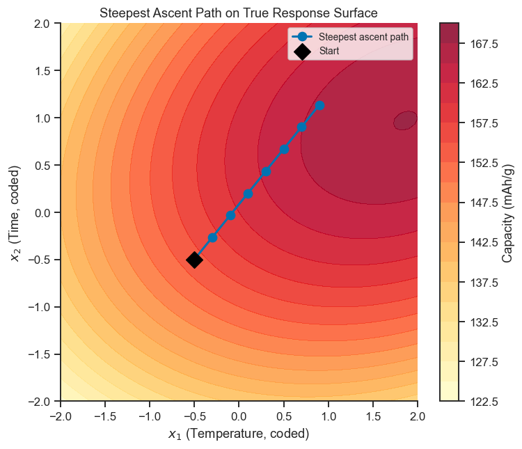
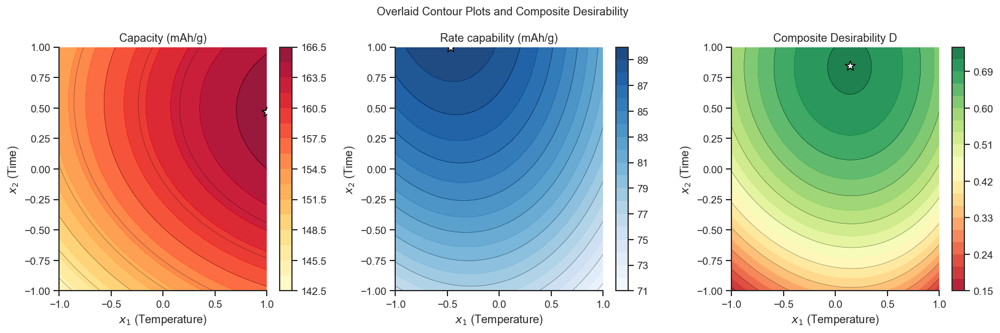

20. Optimisation Using DoE#
Once a quadratic response surface model has been fitted, optimisation can be performed analytically or numerically. When multiple responses must be optimised simultaneously, desirability functions combine them into a single composite criterion.
Topics
Steepest ascent/descent from a screening model
Individual and composite desirability functions
Numerical optimisation with
scipy.optimizeOverlaid contour plots for multi-response optimisation
Case study: simultaneous optimisation of capacity and rate capability
import numpy as np
import pandas as pd
import matplotlib.pyplot as plt
import seaborn as sns
import pyDOE3
import statsmodels.formula.api as smf
from scipy.optimize import minimize, differential_evolution
sns.set_theme(style='ticks', palette='colorblind')
plt.rcParams.update({'figure.dpi': 110, 'font.size': 11})
rng = np.random.default_rng(17)
20.1 Steepest Ascent from a First-Order Model#
Screening (Notebooks 17–18) tells you which factors matter, but the screening region is often far from the true optimum — you haven’t yet found the top of the hill, only the direction uphill. Steepest ascent is a simple, practical idea: fit a straight-line (first-order) model from a small screening factorial, treat its coefficients as a compass bearing, and then run a handful of new experiments walking in that direction, checking after each step whether the response is still improving. This avoids wasting a full, expensive Response Surface design on a region that turns out not to contain the optimum.
If the first-order model is \(\hat{y} = b_0 + b_1 x_1 + b_2 x_2\), then the coefficients \((b_1, b_2)\) themselves are the compass direction of steepest improvement: a bigger \(b_1\) relative to \(b_2\) means “walk further in the \(x_1\) direction for every step in \(x_2\).” You keep taking steps along this direction and re-measuring the response until it stops improving — that is the signal that you have entered the curved region near the true optimum, where a first-order model is no longer good enough and it is time to switch to RSM (Notebook 19).
# True 2-response surface (capacity and rate capability)
# Factors: x1=temperature, x2=sintering time
def true_surface(x1, x2):
cap = (160
- 2.0*x1**2 - 3.5*x2**2
+ 6.0*x1 + 4.0*x2
+ 1.5*x1*x2)
rate = (85
- 3.0*x1**2 - 1.5*x2**2
- 2.0*x1 + 5.0*x2
+ 0.5*x1*x2)
return cap, rate
# Screening 2² factorial at starting point (already in coded units)
x_start = np.array([-0.5, -0.5]) # current operating point
design_screen = pyDOE3.ff2n(2) * 0.5 + x_start
df_screen = pd.DataFrame(design_screen, columns=['x1', 'x2'])
noise = rng.normal(0, 1.5, len(df_screen))
cap_vals, _ = true_surface(df_screen['x1'], df_screen['x2'])
df_screen['capacity'] = cap_vals + noise
fo_model = smf.ols('capacity ~ x1 + x2', data=df_screen).fit()
b1, b2 = fo_model.params['x1'], fo_model.params['x2']
print(f'First-order coefficients: b1 = {b1:.3f}, b2 = {b2:.3f}')
print(f'Steepest ascent direction: ({b1:.3f}, {b2:.3f})')
# Steepest ascent path (step size = 0.2 in x1 direction)
step = 0.2 / abs(b1) * np.array([b1, b2])
path_x = [x_start + s * step for s in range(8)]
path_x = np.array(path_x)
path_y = [true_surface(p[0], p[1])[0] + rng.normal(0, 1.5) for p in path_x]
print('\nSteepest ascent experiments:')
df_path = pd.DataFrame(path_x, columns=['x1', 'x2'])
df_path['capacity'] = path_y
print(df_path.round(3).to_string(index=False))
First-order coefficients: b1 = 4.820, b2 = 5.638
Steepest ascent direction: (4.820, 5.638)
Steepest ascent experiments:
x1 x2 capacity
-0.5 -0.500 151.158
-0.3 -0.266 156.856
-0.1 -0.032 158.037
0.1 0.202 159.967
0.3 0.436 162.561
0.5 0.670 164.034
0.7 0.904 161.510
0.9 1.137 166.725
Take-home message
Capacity climbs steadily along the ascent path, from 151.2 at the start to 166.7 by step 7 — confirming the first-order model’s direction is pointing genuinely uphill, not just by chance.
Notice step 6 (161.5) actually dips slightly below where step 5 (164.0) would extrapolate before step 7 recovers to the path’s best value (166.7) — real steepest-ascent walks are not perfectly monotonic once measurement noise is involved (here, σ≈1.5 on each reading). Judge progress by the overall trend across several steps, not by whether every single step individually improved on the last.
# Visualise steepest ascent on the true surface
xi = np.linspace(-2, 2, 80)
X1, X2 = np.meshgrid(xi, xi)
CAP, RATE = true_surface(X1, X2)
fig, ax = plt.subplots(figsize=(7, 6))
cf = ax.contourf(X1, X2, CAP, levels=20, cmap='YlOrRd', alpha=0.85)
plt.colorbar(cf, ax=ax, label='Capacity (mAh/g)')
ax.plot(path_x[:, 0], path_x[:, 1], 'b-o', ms=8, lw=2, label='Steepest ascent path')
ax.scatter(*x_start, s=120, c='black', marker='D', zorder=6, label='Start')
ax.set_xlabel('$x_1$ (Temperature, coded)')
ax.set_ylabel('$x_2$ (Time, coded)')
ax.set_title('Steepest Ascent Path on True Response Surface')
ax.legend(fontsize=9)
sns.despine(ax=ax)
plt.tight_layout()
plt.show()

Take-home message
The path is a single straight line, not a curve — by construction, since every step is a fixed multiple of the same direction vector computed once from the screening factorial (Section 20.1), not re-fitted after each new point. That is the entire trade-off of steepest ascent: cheap (one small factorial, then a handful of confirming runs along a straight line) but blind to any curvature until you actually walk into it.
Visually, the path crosses from the darkest (lowest-capacity) contour band near the black diamond into progressively brighter bands, then starts running roughly along a contour line rather than across new ones by the last couple of markers — the picture-level version of “progress is levelling off,” which is exactly the cue (Section 20.1’s introduction) to stop extrapolating the straight line further and switch to a curved, RSM model (Notebook 19) instead.
20.2 Desirability Functions#
Real optimisation problems rarely have one goal. Here we want to simultaneously maximise capacity and rate capability — and the combination of factors that is best for one is not necessarily best for the other. A desirability function referees this trade-off by converting each response to a common 0–1 “grade” and then combining the grades (see Section 4 of the theory page for the full picture with the general min/target/max formula). For a response you want to maximise (as both responses are here), the grade is:
In words: below the acceptable minimum \(y_{\min}\), the grade is 0 no matter how good the other response is; above the target \(y_{\max}\) the grade is a perfect 1; in between, the grade rises smoothly. The composite desirability — the number we actually optimise — is the geometric mean of the individual grades: $\(D = \left( \prod_{i=1}^{r} d_i \right)^{1/r}\)$
Multiplying (rather than averaging) the grades means a combination that completely fails one response (\(d_i=0\)) scores \(D=0\) overall, however good the other response is — exactly the “every requirement must be met” behaviour you want when judging a real formulation.
# Fit quadratic models for both responses using a CCD
design_ccd = pyDOE3.ccdesign(2, center=(3, 3), face='ccf')
df_ccd = pd.DataFrame(design_ccd, columns=['x1', 'x2'])
cap_n, rate_n = true_surface(df_ccd['x1'], df_ccd['x2'])
df_ccd['capacity'] = cap_n + rng.normal(0, 1.5, len(df_ccd))
df_ccd['rate_cap'] = rate_n + rng.normal(0, 1.2, len(df_ccd))
df_ccd['x1sq'] = df_ccd['x1']**2
df_ccd['x2sq'] = df_ccd['x2']**2
quad_cap = smf.ols('capacity ~ x1+x2+x1sq+x2sq+x1:x2', data=df_ccd).fit()
quad_rate = smf.ols('rate_cap ~ x1+x2+x1sq+x2sq+x1:x2', data=df_ccd).fit()
print(f'Capacity model R²={quad_cap.rsquared:.3f}')
print(f'Rate cap model R²={quad_rate.rsquared:.3f}')
Capacity model R²=0.967
Rate cap model R²=0.957
def desirability_max(y, y_min, y_max, s=1):
d = (y - y_min) / (y_max - y_min)
return float(np.clip(d, 0, 1)**s)
cap_min, cap_max = 140, 170 # mAh/g — want to maximise
rate_min, rate_max = 70, 95 # mAh/g — want to maximise
# Grid for composite desirability plot
xi = np.linspace(-1, 1, 80)
X1g, X2g = np.meshgrid(xi, xi)
Zdf = pd.DataFrame({'x1': X1g.ravel(), 'x2': X2g.ravel(),
'x1sq': X1g.ravel()**2, 'x2sq': X2g.ravel()**2})
cap_pred = quad_cap.predict(Zdf).values
rate_pred = quad_rate.predict(Zdf).values
d_cap = np.array([desirability_max(v, cap_min, cap_max) for v in cap_pred])
d_rate = np.array([desirability_max(v, rate_min, rate_max) for v in rate_pred])
D = np.sqrt(d_cap * d_rate) # composite desirability
D_grid = D.reshape(X1g.shape)
fig, axes = plt.subplots(1, 3, figsize=(15, 5))
titles = ['Capacity (mAh/g)', 'Rate capability (mAh/g)', 'Composite Desirability D']
grids = [cap_pred.reshape(X1g.shape), rate_pred.reshape(X1g.shape), D_grid]
cmaps = ['YlOrRd', 'Blues', 'RdYlGn']
for ax, Z, title, cmap in zip(axes, grids, titles, cmaps):
cf = ax.contourf(X1g, X2g, Z, levels=20, cmap=cmap, alpha=0.9)
ax.contour(X1g, X2g, Z, levels=10, colors='black', linewidths=0.4, alpha=0.5)
plt.colorbar(cf, ax=ax)
# Mark maximum
max_idx = np.unravel_index(Z.argmax(), Z.shape)
ax.scatter(X1g[max_idx], X2g[max_idx], s=120, c='white',
marker='*', zorder=5, edgecolors='black')
ax.set_xlabel('$x_1$ (Temperature)'); ax.set_ylabel('$x_2$ (Time)')
ax.set_title(title)
sns.despine(ax=ax)
plt.suptitle('Overlaid Contour Plots and Composite Desirability', fontsize=12)
plt.tight_layout()
plt.show()

Take-home message
The left and middle panels reveal a genuine conflict: capacity alone is maximised (165.9 mAh/g) at x1=1.0, x2=0.47 — the hottest tested condition — while rate capability alone peaks (89.7 mAh/g) at x1=−0.47, x2=1.0, a cooler condition with more time. There is no single setting that maximises both at once.
The right panel’s composite desirability peaks (D=0.726) at x1=0.14 — almost exactly between the two individual optima’s temperature settings (1.0 and −0.47) — trading a little of each response’s individual best for a setting that shortchanges neither. That interior compromise point, not either coloured panel’s own bright spot, is the one worth taking to the lab, and it is what Section 20.3’s numerical search below finds directly rather than by eye.
20.3 Numerical Optimisation of Composite Desirability#
The composite desirability surface can have several local “bumps” — points
that look optimal only within their immediate neighbourhood. A local search
like scipy.optimize.minimize can get stuck on the first bump it finds if
started nearby. differential_evolution instead searches broadly across the
whole allowed range first (a global search, more computationally expensive
but far less likely to be fooled by a local bump) before homing in — a
sensible default whenever you are not sure the desirability surface has only
one hill.
def neg_D(x):
x1, x2 = x
row = pd.DataFrame({'x1': [x1], 'x2': [x2], 'x1sq': [x1**2], 'x2sq': [x2**2]})
cap = quad_cap.predict(row).values[0]
rate = quad_rate.predict(row).values[0]
d_c = desirability_max(cap, cap_min, cap_max)
d_r = desirability_max(rate, rate_min, rate_max)
return -(d_c * d_r)**0.5
# Use differential evolution for global search (avoids local minima)
bounds_de = [(-1, 1), (-1, 1)]
de_result = differential_evolution(neg_D, bounds=bounds_de,
seed=42, tol=1e-6, maxiter=500)
x_opt = de_result.x
D_opt = -de_result.fun
cap_at_opt = quad_cap.predict(pd.DataFrame({'x1': [x_opt[0]], 'x2': [x_opt[1]],
'x1sq': [x_opt[0]**2], 'x2sq': [x_opt[1]**2]})).values[0]
rate_at_opt = quad_rate.predict(pd.DataFrame({'x1': [x_opt[0]], 'x2': [x_opt[1]],
'x1sq': [x_opt[0]**2], 'x2sq': [x_opt[1]**2]})).values[0]
print(f'Optimal coded conditions: x1={x_opt[0]:.4f}, x2={x_opt[1]:.4f}')
print(f'Composite desirability D = {D_opt:.4f}')
print(f'Predicted capacity = {cap_at_opt:.2f} mAh/g')
print(f'Predicted rate cap = {rate_at_opt:.2f} mAh/g')
Optimal coded conditions: x1=0.1387, x2=0.8381
Composite desirability D = 0.7258
Predicted capacity = 161.94 mAh/g
Predicted rate cap = 88.01 mAh/g
Take-home message
The optimiser lands at capacity=161.9 mAh/g and rate=88.0 mAh/g — both comfortably inside their target windows (140–170 and 70–95), which is exactly why the composite desirability (D=0.726) is high but not a perfect 1.0: neither response is pushed all the way to its individual maximum, because doing so for one would cost too much of the other.
That trade-off is the entire point of a composite score: the individual quadratic models (Section 20.2) could each be pushed higher in isolation, but the geometric mean in \(D\) specifically penalises solutions that neglect either response, steering the optimiser toward a balanced compromise instead of an single-response extreme.
Exercises#
Weighted desirability: Modify the composite desirability to give twice the weight to capacity compared to rate capability: \(D = (d_{\text{cap}}^2 \cdot d_{\text{rate}})^{1/3}\). Does the optimal point shift? By how much?
Constraint optimisation: Add a constraint that the sintering temperature (natural: \(T = 800 + 100x_1\)) must not exceed 870 °C. Use
scipy.optimize.minimizewithconstraints={'type': 'ineq', 'fun': ...}.Confirmation run: The DoE workflow requires a confirmation run at the predicted optimum. Simulate 3 replicate measurements using
true_surfacewith σ=1.5 noise. Is the observed mean within the 95% prediction interval from the model?